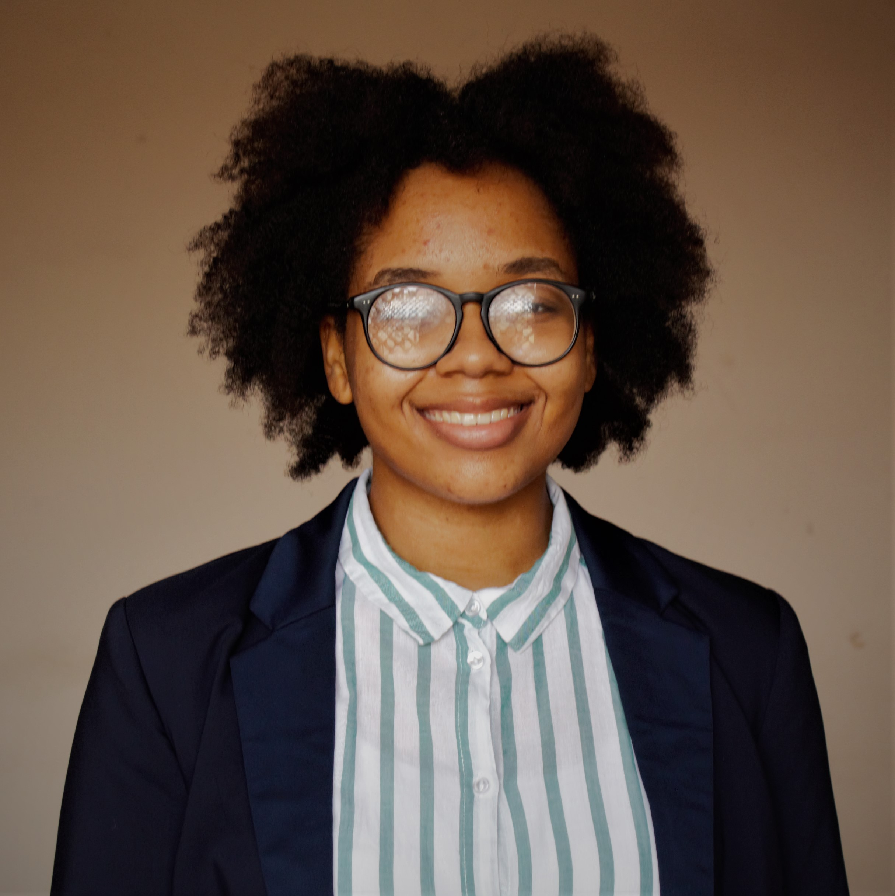

Projects
 Chinwe Ibegbu is a third year Computer Science major at Ashesi University. Her professional interests include Robotics, Artificial Intelligence and Web Development. However, you can generally find Chinwe watching cat videos in her bed with a mug of Tetley. Chinwe is from Nigeria and spend most of her time in either Lagos or Berekuso.